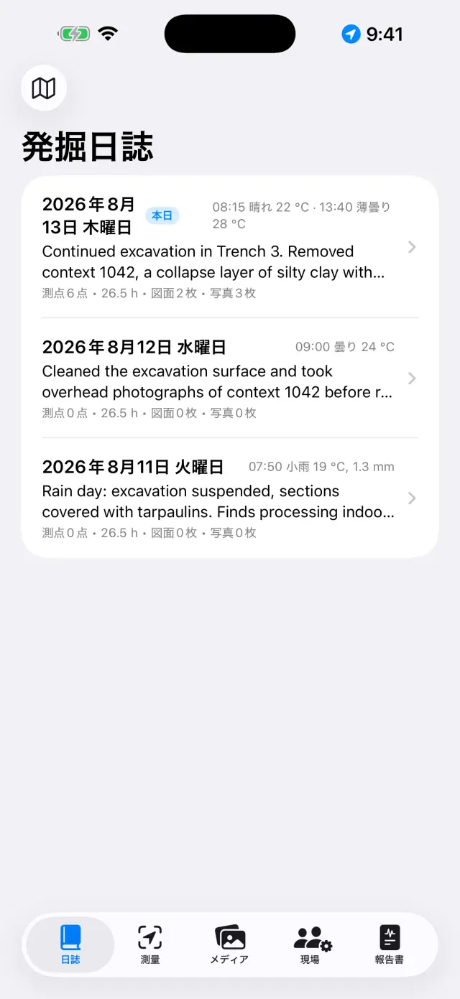
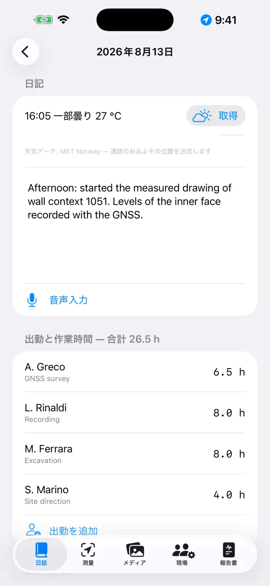
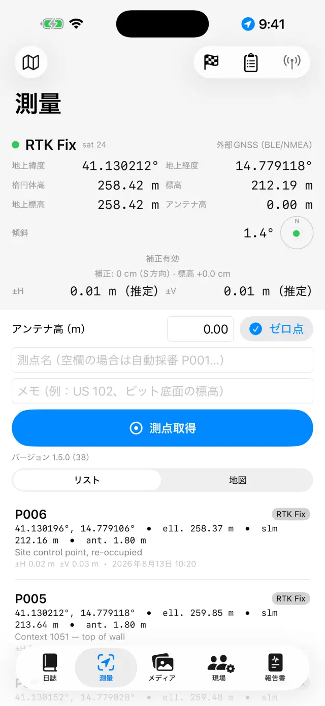
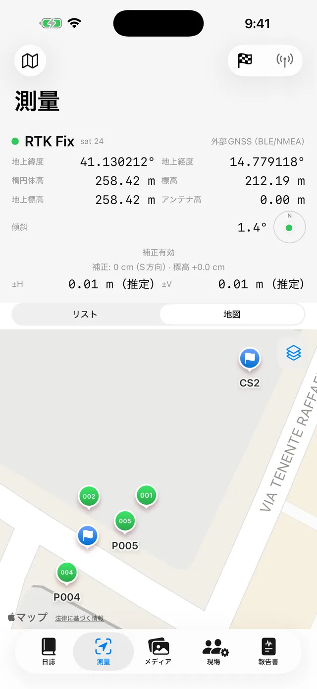
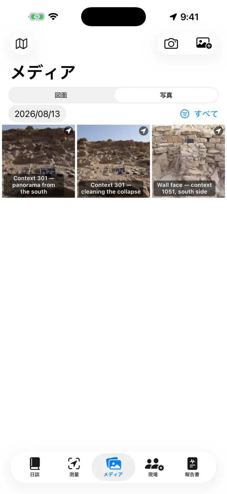
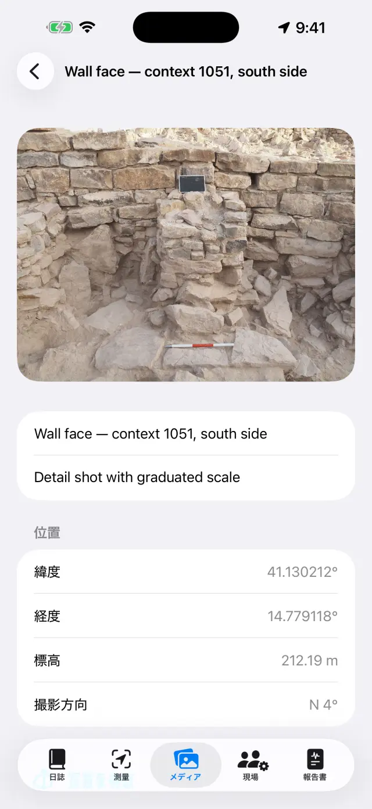
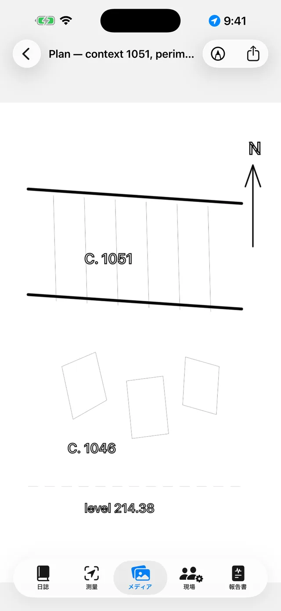

Italiano English Deutsch Español
Français Português Polski Română
Magyar Русский العربية 简体中文
日本語 한국어 Türkçe فارسی
Ελληνικά
Giornale di Scavo — 使い方ガイド
iPhoneとiPadのためのデジタル発掘日誌です。100%オフラインで、データは常にお使いの端末に保存されます。
ひとことで言うと
考え方はひとつだけです。発掘の一日一日がひとつのページにな
り、自動的に埋まっていきます。記録はそれぞれの場所で行います——測量でGNSS測点
を、メディアで写真を、現場で作業時間を——すると、その日のページが
日誌の中ですべてを自動的に集めてくれます。週の終わりや発掘の終わり
には、報告書はそれらのページから自動的に作られます。
典型的な一日
- 朝その日のページを開き、天気と日記を記録します（音声入力で話して入力することもできます）
- 出勤現場で出勤者とその時間を記録します
- 測量GNSS測点を取得します。RTKを使う場合は先に基準点を点検します
- 写真メディアから撮影します。座標は自動的に付加されます
- 図面写真の上から断面図や平面図をなぞります（デジタルトレーシングペーパー）
- 夜報告書タブから日次報告書を生成します。すぐに送信できるPDFが完成します
はじめに
- 初回起動時にはサンプルの遺跡がすでに用意されています。自分の遺跡を作成する
には、上部の遺跡名（🗺アイコン）をタップし、新規遺跡…を
選んで名前を付けます（例：「Colle Sant'Angelo — トレンチ3」）。
- 使用中の遺跡名は常に上部に表示され、すべてのタブにその遺跡のデータが表示さ
れます。遺跡を切り替えるには、名前をもう一度タップします。一覧は「自分の遺
跡」という見出しの下にあり、遺跡名を変更…を使えば、何も失わずに名
前を修正できます。
- 求められたら権限を許可してください。位置情報（測点のため）、
カメラ（写真のため）、マイク（音声入力のため）、
Bluetooth（外部受信機を使う場合のみ）です。
5つのタブ
📓 日誌
- ある日をタップするとそのページが開きます。その日の日記、天気、出勤、測
点、写真、図面がすでにまとめられています。
- 日記を書くか、音声入力をタップして話します。文字起こしは端末上
で行われるため、ネットワークがなくても使えます。
- 天気は手入力もできますし（例：「晴れ、28°C、微風」）、取得を
タップしてノルウェー気象局にその時点の天気を問い合わせることもできます。取得に
はネットワークが必要で、有効なのは本日のページのみです。昨日の天気はもう取得で
きません。午後にもう一度タップすると、記録が追加されます。手入力した内容は常に
優先されます。
- 取得時に外部へ送信されるのは、約11メートル単位に丸められたおおよその位置情
報だけです。報告書ではこの行が報告書の言語で表示されます。

発掘日の一覧
ある一日のページ📍 測量
- 上部のパネルにはリアルタイムの位置情報が表示されます。座標、高さ、精度、
Fixの種類（GPS / RTK Float / RTK Fix）です。
- ポールを使用する場合はアンテナ高（m）を設定します。測点の標高は
自動的に地面の高さに換算されます。
- 測点取得をタップします。名前は自動採番されます（P001、P002…）
が、自分で名前を入力することもできます（例：「US 102 — 底面標高」）。メモを追
加することもできます。
- リストと地図を切り替えると、測点を実際の場所で確認
できます。地図では地籍図や別のWMSサービスを有効にできます。
- 基準点（🏁）には専用のセクションがあります。CSVからインポートするか、自分
で作成し、測量の前に点検機能でΔ北/Δ東/Δ標高の誤差をリアルタイムに確認できま
す。
- 水準野帳は光学レベルのための現場用野帳です。測点、後視・前視
の読み、出発の基準点から計算する標高、そして閉合の確認まで記録します。水準測
量で得た点は、GNSSの点と同じように標高とともに遺跡に加わります。

測量のGNSSパネル
地図上の測点と基準点各測点には2種類の高さが保存されます。楕円体高
と標高です。端末内蔵のGPSでは標高が取得できない場合があり、その場合は外部受信
機が必要です（下記参照）。
📷 メディア
- カメラボタンで撮影するか、写真ライブラリからインポートします。
- 写真は自動採番され（F001、F002…）、直近に取得できたGNSS位置情報で位置情報
が付加されます。
- 撮影時にはコンパスから撮影方向も記録されます。写真の詳
細や報告書では「SOから撮影 — 214°」のように表示され、真上から撮影した写真
（平面図や遺構の底面など）では、上辺の向きを示す直下撮影の表記になります。コ
ンパスに干渉がある場合はアプリがそれを知らせます。
- 写真をタップするとタイトルとメモを設定できます（例：「US 102、北から撮
影」）。
- 写真カードを共有 PROは記録用
の写真カードを生成します。写真の下に撮影データ（遺跡名、番号、日付
と時刻、座標、標高、方向）が付き、位置ピンと撮影方向のコーンを示す衛星画像、
地図の縮尺バー、北矢印が加わります。地図にはネットワークが必要です。ネットワ
ークがなくてもカードは生成され、データパネルが広くなります。

写真ギャラリー
写真の詳細画面：座標・標高・撮影方向✏️ 図面（メディア内）
- 新しい図面を作成し、遺跡の写真を背景として選びます。これがあなたのデジタル
トレーシングペーパーです。図面は複数の日にまたがって続けることができます。
- 指またはApple Pencilで層、切り合いの線、石をなぞります。写真の不透明度を調
整すると線がより見やすくなります。ピンチでズームできます
（最大6倍まで、2本指のダブルタップで1倍に戻ります）。
- 自動トレース PROは、タップした対象物
（石や層の境界など）の輪郭を認識し、線に変換します。色と太さはモードを抜けず
に変更できます。すべて端末上で行われ、ネットワークは不要です。
- ラベル用のテキストボックス（例：「US 1002」）を追加できます。位置の移動、
ピンチでのサイズ変更ができ、4種類のフォントから選べます。
- 縮尺（定規）ツールでは、既知の距離の両端——標尺の一区間など—
—をタップして、実際の距離を入力します。写真に縮尺が設定され、以降の書き出し
はすべてメートル単位になります。
- 標高のある点を使うと、遺跡のGNSS測点（または手入力した点）の
十字マークを写真の上に置けます。名前・標高・座標は、引き出し線の付いたドラッ
グ可能なラベルに表示されます。
- 凡例付きでエクスポート PRO：画像の下
に白い帯が付きます——縮尺が設定されていれば縮尺バー、真上から撮影した写真に
は北矢印、正面から撮った写真には「…から撮影」の表記です。
- ベクターでエクスポート PRO：図面用の
SVG、またはGIS用のDXFです。真上から撮影した写真に座標付き
の標高のある点を2つ以上置くと、DXFはUTM座標系で座標付けされ
、QGISでは自動的に正しい位置に配置されます。縮尺だけの場合はローカル座標（メ
ートル）で出力されます。どちらもない場合はアプリがそう伝え、単位のないファイ
ルは作られません。
- 完了したら写真を非表示にします。きれいな図面だけが残り、報告書にすぐ使えま
す。

デジタルトレーシングペーパー👷 現場
- その日の出勤を記録します。各人の氏名、職務、作業時間です。
- 機材の在庫と、それぞれの担当者を管理します。
📄 報告書
- 種類を選びます。日次（無料、透かし入り）、週
次、月次、または完全な付録付きの最終
報告書 PROです。
- 報告書の言語は17言語から選べます。アプリの言語とは独立し
ており、アプリを日本語で使っていても、報告書はドイツ語で出力できます。
- PDFを生成するほか、ロゴと写真付きのDOCX PRO、測点
のCSV、QGIS用のGeoJSON PROとしてエクスポートできま
す。
- 報告書での写真表示がオンのとき、写真の代わりに写真カード
PROを選べます。各写真はデータと地図を備えた記録カー
ドとして、報告書の言語でPDFとDOCXに収録されます。
外部GNSS受信機とNTRIP
外部受信機（センチメートル級のアンテナ）を使うと、アプリはRTK精度に到達しま
す。内蔵GPSは常にフォールバックとして利用できます。
- 受信機の電源を入れ、iPhoneのBluetoothを有効にします。
- 測量で位置情報のソースを選びます。外部GNSS（BLE/NMEA）
PROを選び、リストから受信機を選択します。MFi受信機
（無料）や、ネットワーク経由でNMEAを配信する受信機にも対応しています。
- RTK補正のためにNTRIPを設定します。Casterのアドレス、ポー
ト、Mountpoint、ユーザー名、パスワード（端末のキーチェーンに保存されます）で
す。アプリは位置情報をCasterに送信し、補正データを受信します。
- RTK Fixに切り替わるのを待ちます。センチメートル級の精度で
す。作業を始める前に基準点で点検してください。
バックアップと交換
- 遺跡メニューから遺跡をエクスポート（.zip）をタップします。中に
はすべてが入っています——日誌、測点、写真、図面、作業時間、基準点です。
- ZIPファイルは好きな場所に保存できます（ファイル、Drive、メールなど）。これ
がバックアップです。このアプリはあえてクラウドを持たない設計になっています。
- 遺跡をインポート（.zip）…を使うと、別の端末で遺跡を再現できま
す。iPhoneとAndroidの間でも可能です。
⚠️ 遺跡を削除…は、遺跡とその内容をすべて削除する操作
で、元に戻せません。迷ったら先にZIPをエクスポートしてくださ
い。
無料版とPro
| 無料 | Pro |
|---|
| 遺跡 | 1 | 無制限 |
| GNSS | 内蔵GPS、MFi受信機 | + BLE/NMEA、NTRIP |
| 報告書 | 透かし入りの日次報告書 | すべて、透かしなし |
| エクスポート | PDF、CSV | + ロゴと写真付きDOCX、GeoJSON |
| 図面 | トレーシングペーパー、ズーム、テキスト、縮尺、標高のある点 | + 自動トレース、凡例付きでエクスポート、SVG/DXF |
| 水準野帳 | ✓ | ✓ |
| 写真カード | — | 共有、および報告書内のカード |
| 音声入力 | ✓ | ✓ |
| 報告書の言語 | 17 | 17 |
Proは月額または年額の自動更新サブスクリプションか、一度きりの買い切りライセ
ンスとして提供されます。Apple IDの設定からいつでも管理・解約できます。
トラブルシューティング
Bluetooth受信機が表示されない、または接続できない
次の順に確認してください。
- 受信機の電源が入っていて、他のアプリや他の端末にすでに接続されていないこ
と。
- システムのBluetoothがオンで、アプリにBluetoothの権限が与えられていること
（設定 → Giornale di Scavo）。
- 測量で選んだソースが外部GNSS（BLE/NMEA）になっていること。
- 受信機の電源を入れ直してから、もう一度検索すること。
RTK Fixにならない
- 有効なNTRIP接続が必要です。Caster、Mountpoint、認証情報を確認してくださ
い。
- 端末のデータ通信の状態を確認してください。補正データはインターネット経由
で届きます。
- 空が開けていることが重要です。密な樹木や近くの壁は信号を劣化させます。状
態が悪いとRTK Float（デシメートル級）のままになることがあります。
- 近くのMountpoint（30〜40km未満）またはVRSネットワークを選んでください。
NTRIPが接続できない
- アドレスとポート（多くは2101）を確認し、Mountpointが実在することを確認し
てください。多くのCasterは一覧（sourcetable）を公開しています。
- ユーザー名またはパスワードが間違っていると401/403エラーになります。認証情
報を再確認してください。
- 一部のネットワークでは位置情報（GGA）の送信が必要です。アプリが自動的に送
信しますが、受信機がすでにFixを得ている必要があります。
標高が空、またはゼロになる
端末内蔵のGPSでは楕円体高しか得られません。標高はGGA文を送ってくる外部受信
機から得られます。受信機がない場合でも、測点には楕円体高が保存されます。
音声入力が機能しない
- 設定でマイクと音声認識の権限を確認してください。
- 文字起こしは端末上で行われます。初回はシステムが言語モデルをダウンロード
する必要がある場合があります（このときだけネットワークが必要で、以降はオフラ
インで使えます）。
- 短い文で話してください。テキストは日記の末尾に追加されます。
地籍図（WMS）が表示されない
アプリ自体はオフラインですが、WMSレイヤーはウェブサービスなので、通信と稼
働中のサービスが必要です。イタリアの地籍図はあらかじめ設定されています。他の国
の場合は、その国の公的サービスのWMSエンドポイントを入力してください
（EPSG:3857に対応している必要があります）。データ通信の圏外でも、ベースの地図
と測点は表示されたままです。
写真に座標が付かない
写真の位置情報は直近のGNSS Fixから取得されます。先に測量を開き、位置が確定
するのを待ってから撮影してください。位置情報の権限が拒否されている場合、写真は
座標なしで保存されます。
報告書に写真やロゴがない
報告書内の写真、ロゴ、カスタムヘッダーはProの機能で、DOCXとPDFの両方に適用
されます。無料の日次報告書には透かしが入り、写真は含まれません。
誤って遺跡を削除してしまった
削除は完全なもので、データを復元することはできません（クラウドは存在しませ
ん）。以前にエクスポートしたZIPがあれば、それをインポートしてその時点の状態に
遺跡を復元できます。おすすめ：毎日の終わりにZIPをエクスポートしておきましょ
う。
Proを購入したのにまだロックされている
Pro画面で購入を復元をタップします。購入時と同じApple IDを使用し
てください。端末を変更した場合でも、復元によってサブスクリプションや買い切りラ
イセンスを取り戻せます。
「取得」がグレーアウトしている、または「天気情報利用不可」と表示される
- ボタンがグレーアウトしている場合は、過去の日のページを見ています。天気は
本日のページでのみ取得できます。
- 「天気情報利用不可」と表示される場合は、ネットワークがないか、位置情報の
元となるGNSS測点がまだ遺跡にありません。測点を1つ取得してからもう一度試してく
ださい。
写真カードに地図が表示されない
衛星画像はAppleから取得されるためネットワークが必要です。アプリは最大15秒
待ってから、地図なしのカードを生成します（データはネットワークを待ちませ
ん）。現場の低速な回線では待ち時間いっぱいかかることがあります。Wi-Fi環境で
再度お試しください。写真に位置情報が付いていない場合、地図はそもそも表示され
ません。
DXFが拒否される、またはGISで「原点付近」に開かれる
- 座標付けされたDXFには、アプリのカメラで真上から撮影した
写真と、写真上に十分離して置かれた座標付きの標高のある点が
2つ以上必要です。
- 標尺の縮尺だけの場合、DXFはローカル座標（メートル）で出
力されます。これ自体は正しいのですが、GISでは原点付近に表示されます——アプリ
は事前にそれを知らせます。
- 縮尺も点もない場合、書き出しは拒否されます。単位のないDXFはどのGISでも意
味のある形では読み込めないためです。
「凡例付きでエクスポート」に北矢印が表示されない
矢印が表示されるのは、アプリのカメラで真上から撮影した写真
だけです。これは撮影時に方位角を記録するためです。正面から撮った写真には「…
から撮影」という表記が入ります（立面図の平面に北矢印を置くのは、幾何学的には
嘘になってしまうためです）。写真ライブラリからインポートした写真にはどちらも
表示されません。撮影データがないためです。